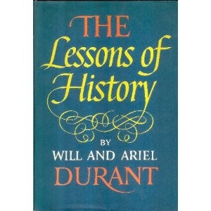

威尔·杜兰特（Will Durant）与妻子阿里尔·杜兰特（Ariel Durant）用四十年时间写就了十一卷本的《文明的故事》（The Story of Civilization），从东方文明的源头一路写到拿破仑时代，总计逾万页。其中第十卷《卢梭与大革命》于1968年获得普利策非虚构类奖，1977年两人又被授予总统自由勋章。《历史的教训》出版于1968年，是杜兰特夫妇在完成《文明的故事》前十卷后，将五千年历史中反复浮现的规律浓缩为仅一百余页的小书。它不是对《文明的故事》的缩写，而是两位历史学家晚年对人类经验的提炼与省思。
全书分为十三章，依次从地理、生物、种族、性格、道德、宗教、经济、社会主义、政府、战争、增长与衰退、进步等维度审视历史。杜兰特夫妇的核心论点可归纳为几条线索。其一，人性恒常：技术在变，制度在变，但驱动人类行为的贪婪、恐惧、虚荣与野心几千年来并无本质改变，因此历史会以相似的轮廓反复上演。其二，不平等是文明的常态而非例外——自然赋予人不同的禀赋，社会的分化只是这种差异的延伸；当不平等积累到临界点，便会以改革或革命的方式重新分配，然后新一轮集中又开始。其三，自由与平等处于永恒的张力之中：追求自由必然导致差距扩大，追求平等则须限制自由，文明的存续在于两者之间的动态平衡。其四，宗教在道德秩序中的作用不可轻视——杜兰特本人早年脱离教会，但研究历史数十年后承认，宗教为社会提供了世俗法律难以替代的道德约束力。其五，文明的兴衰有迹可循：每一个伟大文明都经历过开拓、繁荣、奢靡、衰落的周期，但文明的遗产——知识、艺术、制度——会在衰亡中被继承者接续，人类的进步正是在这种循环中螺旋向前。
这本书在投资界和企业界享有极高声誉。桥水基金创始人瑞·达利欧（Ray Dalio）在Reddit问答中被问到会推荐什么书给每一位高中或大学毕业生时回答："我会给他们《历史的教训》。杜兰特夫妇也许是有史以来最伟大的历史学家。他们写了五千页关于五千年历史的著作，然后把主题浓缩进这本只有一百零四页的书里。"达利欧认为，多数事件都在以略有不同的方式反复发生，但人们倾向于被近期经验左右，忽视那些在自己有生之年未曾经历、却终将重演的事件。查理·芒格（Charlie Munger）虽未专门为此书背书，但他关于历史的著名论断——"没有比历史更好的老师来判断未来……一本三十美元的历史书里有价值数十亿美元的答案"——与本书的精神一脉相承。2018年10月，以色列总理内塔尼亚胡在会见中国国家副主席王岐山时向其推荐此书，王岐山回应道："我也是这样认为，而且中国的网上早就出过了，我推荐这本书。"
《历史的教训》的价值不在于提供具体的预测，而在于提供一种看待世界的尺度。它让读者意识到，当下发生的经济周期、贫富分化、大国博弈、技术变革，并非前所未有的新事物，而是人类文明中反复出现的旧戏码。对于关注商业、投资和长期决策的读者而言，这本书提供的不是操作指南，而是一种历史感——一种在喧嚣中保持冷静、在狂热中看见周期的能力。杜兰特在书末写道："人类历史的总体成就是巨大的——足以为人类的信心提供充分的理由。"这句话既是对五千年文明的总结，也是对阅读历史之人的鼓励。